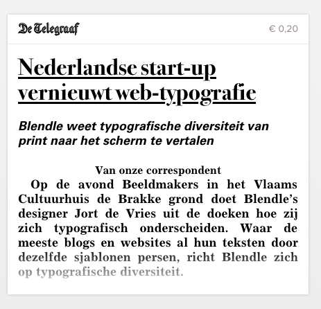

F.l.t.r.: Rolf Coppens, Jort de Vries, Eric Schrijver in De Brakke Grond, Amsterdam
Beeldmakers is an evening in Amsterdam for and by contemporary visual makers in the Flemish Cultural Institue De Brakke Grond. Curated by Veerle Devreese (De Brakke Grond), Rolf Coppens (Grrr) and Eric Schrijver (OSP).
The first edition focuses on Screen Typography. Although most of our reading happens on the screen and through the web, the web’s typographic possibilities have traditionally been very rudimentary. As the resolution of screens increases and the web standards evolve, it is an opportune moment to reflect on the state of the art.
Reproduced below is an interview with Jort de Vries, lead designer of Blendle, a Dutch start-up for whom web typography is an essential part of their venture.
Other parts of the program: Bas Jacobs (Underware) introduces his rules for web typography, and Frederik Berlaen (Robofont a.o.) introduces the combination of making tools for type design and designing type. Autobahn organises a type quiz, and actress Marlies Bosmans recites a document that attempts to codify the relation between users and producers of typography: an End User License Agreement.
E.M.
After having talked with those who are invested in the nitty gritty of making fonts, now there is a moment to talk with someone who uses them. In fact, Jort just told me they might be the website out there that licenses the most web-fonts… currently serving a stack of over 200 fonts! Today we meet Jort de Vries who is the lead designer for Blendle, a Dutch startup that is translating the typographical diversity of the printed press to the web. We’re very glad to have him with us tonight.
Jort, we’ve seen your presentation at the Cross Media Café where you mention shortly that you collaborate with the printed publications in transitioning their design from print to screen. Can you tell us something more about how that process works?
J.d.V.
Sure. It is a process we start again for each publication. We receive two things from them. First the PDF’s. These we use to create the Blendle kiosk, that allows our users to browse the publications. Then the articles themselves. We receive the XML, which is the same format that their print designers integrate into their workflow. We have to take this and create a template that transforms this into the HTML and CSS that make up the design for the screen.
It is a custom process. Every publication has its own structure, and also the files we get from the editor do not always provide all the information we need. So the XML might indicate a heading, a lead, a subheading, and we have to find a way to translate that for the screen. Sometimes we ask the publisher to change the structure of their format to make it more clear and easier to process.

A newspaper snippet from Blendle. For a Dutch reader it will be immediately clear this is from the country’s foremost tabloid newspaper, De Telegraaf, because of the underlined headings.
R.C.
On a level of choice, how does it work—can you get your hands on all typefaces?
J.d.V.
That is not self-evident. There is a lot of negotiation. Not all fonts used in print we are able to license for the web. So we have to make an approximation. Of course we are already making a translation from one medium to the other. The most important is to stay true to the spirit of the publication.
Of course we also have to a lot of optimisations. There is no way you can load full character sets for 200 fonts at once. Also we deal with multiple font serving services. So there is a lot of clever programming on to make it all work, trying to figure out beforehand which letters from which typefaces we are going to need when displaying a specific screen.
Articles in the same layout and in separate layouts
E.M.
Behind us we see an example of the way it works in practice. In the first frame we see multiple articles next to each other, all with the same layout. On the next frame, we see different articles from different publications living side by side, but each with their own distinct typographic personality. If I understand correctly, you came up with this approach as part of your development process?
J.d.V.
It was a key moment in the development of our product. When at first all the articles shared the same design everything looked Blendle. Yet we did not want to be an aggregator, a place that gathers a lot of content and re-brands it. There are enough sites like that on the internet. We wanted to be a platform, where the content could come in its own. So the content needs to be able to bring its own character with it.
E.M.
This approach, where each article has its own typographic signature, seems to touch on a larger problem in web architecture. A lot of applications use centralised templates, through which they push all content. Change the template, all contents changes along with it. The link between what is written in a page and the way it looks is cut entirely. You seem to have found a solution where you have different articles that mix and match but where the individual articles retain a more close relation to their form. In that sense, do you see Blendle’s approach being taken up by other websites?
J.d.V.
Our value proposition is very specific, as we try to translate the typographic diversity from the landscape of periodical press to the screen. I am not sure if it could be more generally adopted for other kinds of websites.
E.M.
At least it would be nice if at was taken up by sites and blogs republishing old articles. Reading an article from the 1990ies in a 2010 design really freaks me out!